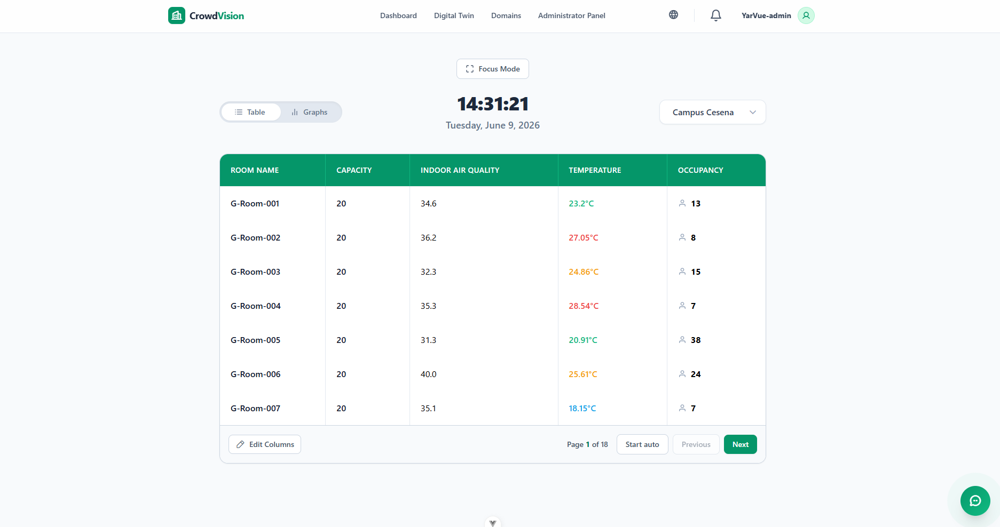
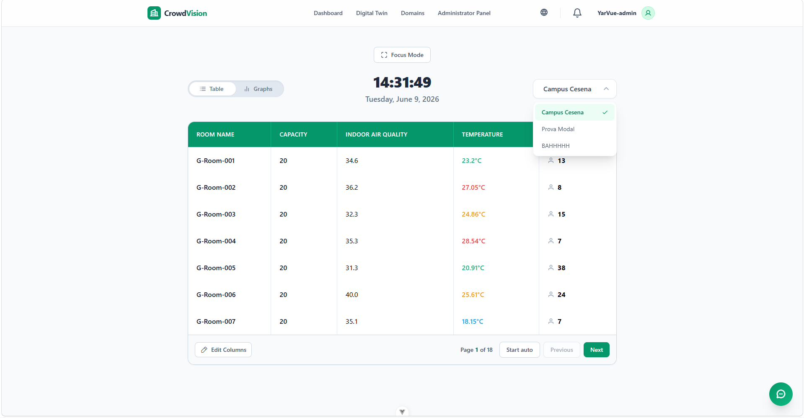
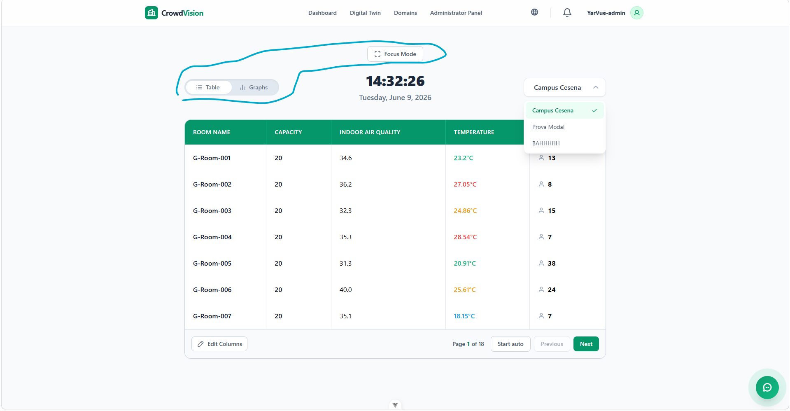

/
User Guide
The Dashboard is your central hub for real-time monitoring. It opens to the Table view, a scannable overview of every monitored room in the selected building.

Figure 1 — The dashboard table view. Each row is a room; columns update live as sensors report.
Each row is one room in the current building, and each column is a property or live measurement. A newly registered building starts with the room name and capacity columns; you can add, remove, reorder, and save columns. See Customizing the Data Table for the full guide.
CrowdVision derives an occupancy status from how full a room is relative to its capacity.
| Status | Occupancy |
|---|---|
| Empty | 0% |
| Normal | 1% to 50% |
| Crowded | 51% to 95% |
| Full | 96% to 100% |
| Overcrowded | over 100% — needs immediate attention |
If you manage several buildings, switch between them from the selector at the top of the dashboard.

Figure 2 — The building selector lists every building your account can access.
A toggle at the top of the dashboard switches between List (the table) and Graph (the charts — see Charts & Simulator. A Fullscreen control expands the current view into a clean, distraction-free display for wall monitors.

Figure 3 — Switch between List and Graph, or enter Fullscreen (Focus Mode).
Esc or click the control again to exit.